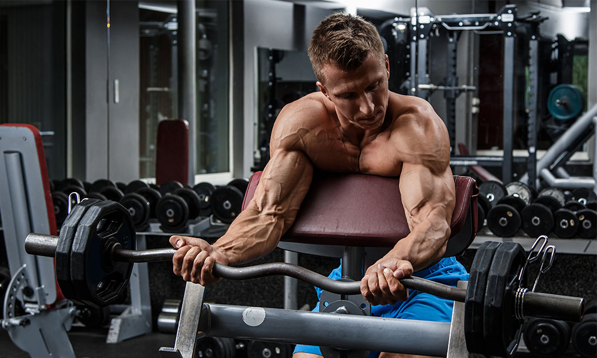

Let's have a look at the best exercises for targeting your biceps, and how you can put together an biceps workout.
1. Incline Dumbbell Curl
To perform the incline dumbbell curl, the lifter needs to lay back onto an incline gym bench.
Curling from an incline takes the momentum out of the equation so that the lifter can’t cheat the weight up.
Secondly, curling with lengthened, extended arms creates a longer range of motion, ultimately making this curl variation more effective.
How to do the Incline Dumbbell Crul
Lay back on an incline bench, angled at about 60 degrees, with a dumbbell in each hand.
Let your arms hang so they’re fully extended. Without moving your shoulders, curl the weight up to your shoulders.
Hold the top of the movement for about a second, and then slowly lower the dumbbells with control.
2. Hammer Curl
The hammer curl has the lifter curl dumbbells with their palms facing each other.
This neutral wrist position is more comfortable and allows the lifter to hoist more weight, as we’re generally stronger with a palms-facing position.
This move also targets the biceps brachialis and brachioradialis (outer biceps and forearm) for more arm thickness.
How to do the Hammer crul
Hold a dumbbell in each hand while standing.
Turn your wrists so that they’re facing each other.
Keep your arms tucked in at your sides and flex your elbows to curl the dumbbells up towards your shoulders.
Lower them back down with control.
3. Cable Curl
When you curl a dumbbell or barbell, the movement is hardest at the midpoint of the lift since the weight is furthest from the body.
However, cables keep tension on the muscle throughout the movement, as the weight stack you’re lifting is suspended throughout.
This adds more tension to the muscle for more growth.
You can also attach different handles to a cable machine‘s pulley to attack your biceps from different angles.
How to do the Cable Crul
Attach the desired handle to the pulley of a cable machine set to the lowest height.
Grab the handle in both hands and take a few steps back so there’s constant tension on the cable (the weight stack should be elevated the entire time).
Curl the bar up to your chest and then slowly lower it back down.
4. EZ-Bar Preacher Curl

Curling on a preacher bench lengthens the exercise’s range of motion.
As a result, the biceps will be under tension for a longer period of time, which usually equates to more muscle growth.
Using an EZ-bar, which turns the hands inwards, makes the move more comfortable on the wrists and shifts the angle of the exercise to target different muscle fibers in the biceps.
How to do the EZ-Bar Preacher Curl
Sit down on a preacher bench and rest the back of your triceps on the pad.
Set your body in the same position as the standard barbell biceps curl (chest up, shoulders back, and elbows slightly forward).
Grasp the EZ-bar handle on the inner angled pieces.
This will place your hands slightly narrower than shoulder-width and on a semi-supinated angle.
With the body locked in place, curl the bar upwards as you flex the biceps, briefly pausing at the top of the curl to flex the biceps.
Lower the weight under control.
5. Concentration Curl
The concentration curl is all about feeling your biceps work.
You sit down on a bench, rest your elbow on the inside of your thigh, and curl a dumbbell from full extension to contraction.
Lifting with one arm at a time means you’re doing more overall work — so you’ll burn more calories and allow your weaker arm to play catch up.
Also, the isolated curling position really lets you hone in on your biceps as you curl a light dumbbell.
How to do the Concentration Curl
Stand in front of a single cable on a functional trainer or cable tower.
With the cable set around chest height, grab the handle with a supinated grip (palm facing up), and slightly lean your torso forward.
Your working arm should be angled across the body while you curl the handle toward the opposite ear.
Keep tension on the biceps all the way to the top of the movement, then slowly lower the load.
6. Chin-Up
The chin-up is a bodyweight exercise that can induce serious muscle growth of the biceps (and back) with nothing but a pull-up bar.
If you have a door-mounted pull-up bar in your home gym, then that’s all you need to bang out sets of chin-ups.
Since the lifter pulls their own bodyweight, the biceps are usually exposed to loads heavier than one can lift with a barbell.
However, lifters may often perform these incorrectly, engaging their shoulder and grip muscles.
How to do the Chin-Up
Hang from a bar with palms facing you and the hands about shoulder-width apart, or slightly wider.
From a dead hang, squeeze your shoulder blades together and pull your body up,
making sure not to let the body fold inwards (so many people do this) until your chin is at or above the bar.